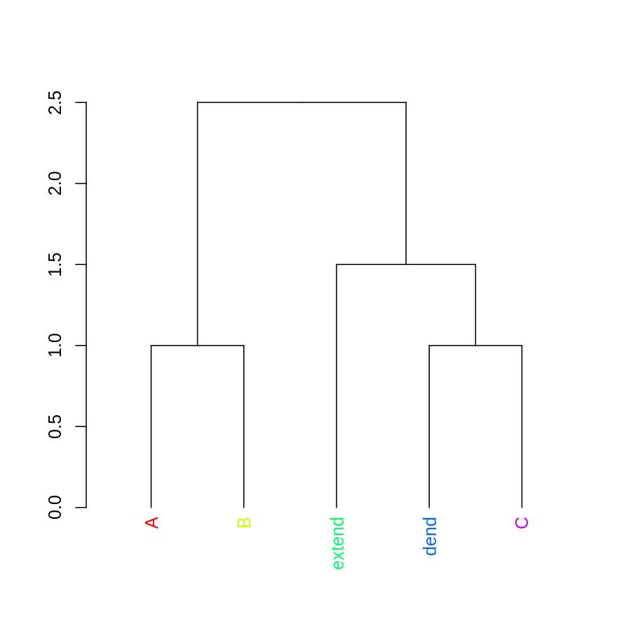
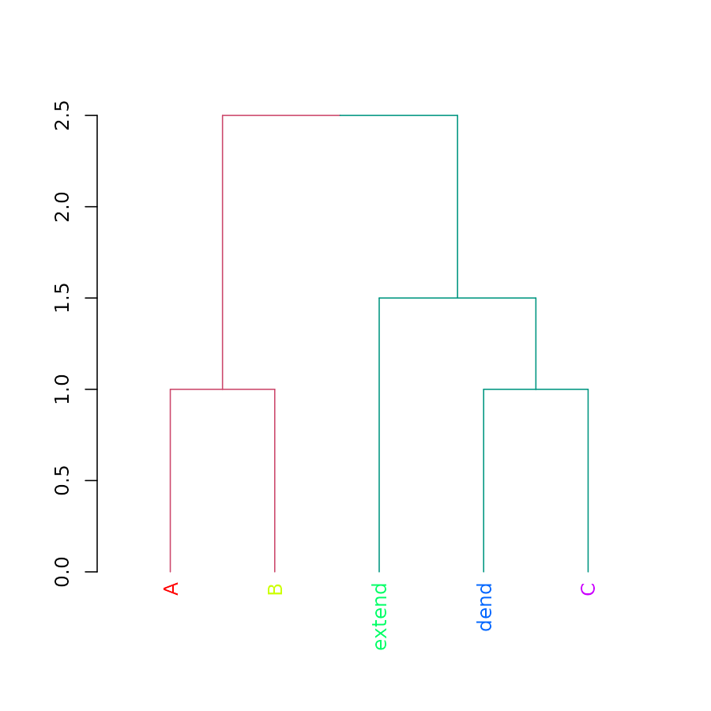
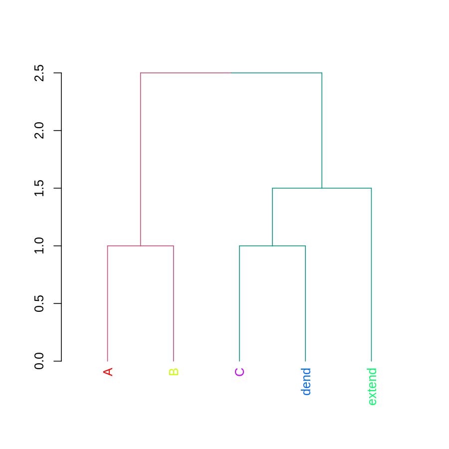
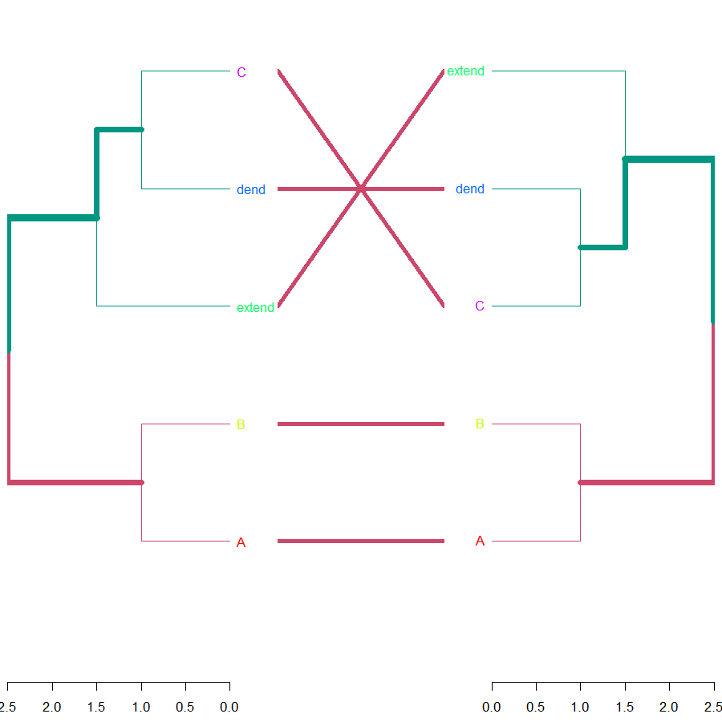
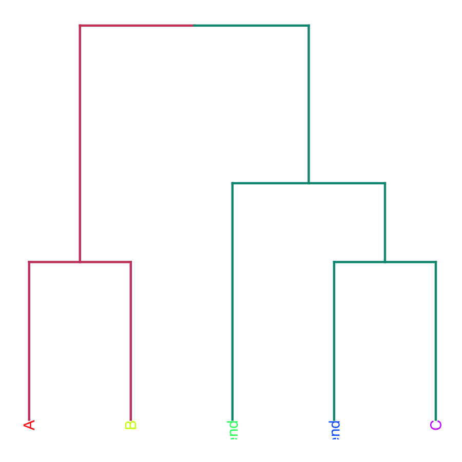

vignettes/Quick_Introduction.Rmd
Quick_Introduction.RmdLoad:
library(dendextend)Create a dendrogram (if you don’t know what %>% is, read about it here ) :
Plot:
plot(dend)Get/set labels
labels(dend)## [1] 1 2 5 3 4## [1] "A" "B" "extend" "dend" "C"Get/set labels’ colors
labels_colors(dend)## NULLlabels_colors(dend) <- rainbow(5)
labels_colors(dend)## A B extend dend C
## "#FF0000FF" "#CCFF00FF" "#00FF66FF" "#0066FFFF" "#CC00FFFF"plot(dend)
Cut-tree, and color branches
cutree(dend, k = 2)## A B dend C extend
## 1 1 2 2 2dend <- color_branches(dend, k = 2)
plot(dend)
Sort

Compare
tanglegram( dend, dend2 )
Cor
cor_cophenetic( dend, dend2 )## [1] 1ggplot2
library(ggplot2)
ggplot(dend) ## Warning: Removed 9 rows containing missing values (geom_point).
Send to plot.ly
# library(plotly)
# set_credentials_file(...)
# you'll need to get it from here: https://plot.ly/ggplot2/getting-started/
# ggplot(dend)
# py <- plotly()
# py$ggplotly()